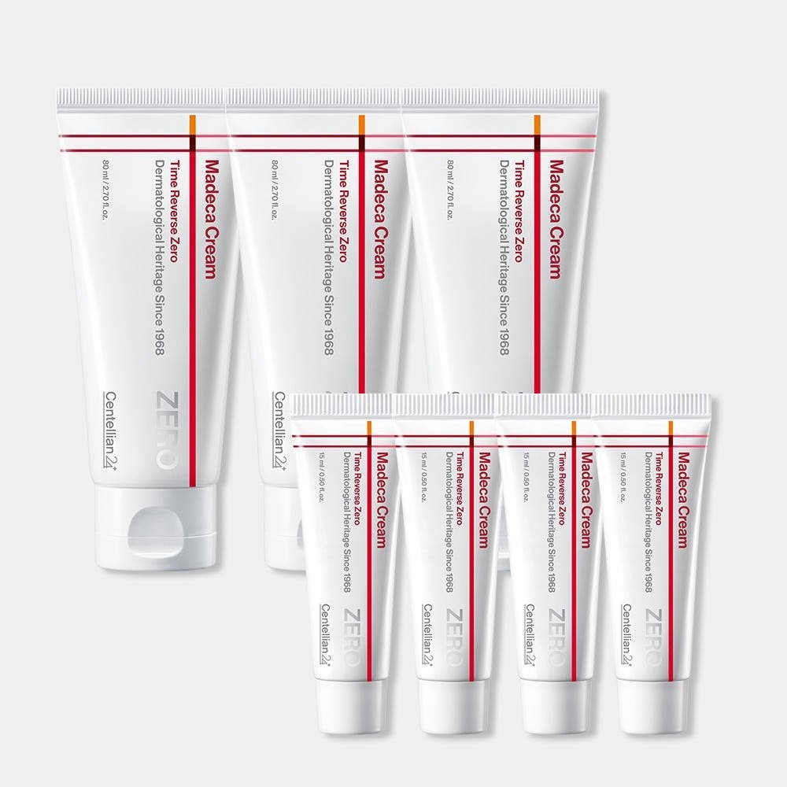
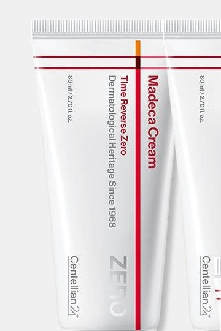
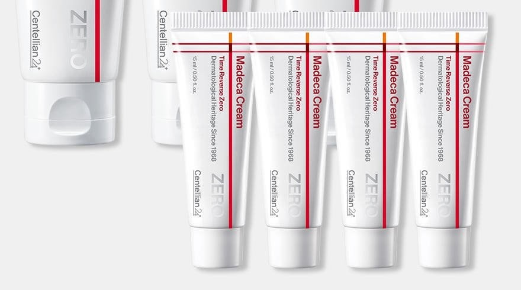

Centellian24 Madeca Cream Time Reverse Zero Review: Korean Sensitive-Skin Cica Cream, Plus Wholesale Sourcing

1. Centellian24 Madeca Cream Time Reverse Zero Review: Overview
This Centellian24 Madeca Cream Time Reverse Zero review covers a cica cream from Centellian24 (센텔리안24), the Dongkook Pharmaceutical brand built around Centella / madecassoside care. It is not the original The Madeca Cream and not the Tight Lifting version — both of those are separate SKUs we have already written about. The Korean set most stores sell in late 2026 is three 80 ml jars plus four 15 ml minis (about 300 ml total) and a gift bag.
In Korea it is positioned for sensitive, dryness-prone skin that still wants brightening and wrinkle-care claims. The brand talks about a “Triple ZERO” idea and a “Blue Active TECA” complex it states at 30,000 ppm. Those are brand claims; what we can verify on the Korean label is more useful for buyers and importers.
"A rich Korean cica cream with dual functional claims (brightening + wrinkle), sold as a multi-jar gift set with travel minis — not the original Madeca Cream."
2. Ingredients and Korea Functional Claims
Here is what the Korean listing and the jar label actually support:
| Focus | From the Label / Listing | Role for Shoppers |
|---|---|---|
| 🌿 Cica / TECA | TECA-related Centella actives: madecassic acid, asiaticoside, asiatic acid, madecassoside | Calmer, repaired-feeling barrier — the Centellian24 signature |
| ✨ Niacinamide | Listed high on the INCI; Korea brightening functional agent | Uneven tone / dull-skin story |
| 💧 Barrier cushion | Glycerin, panthenol, hyaluronic acid, ceramide NP | Why the cream feels rich rather than watery |
| ⏳ Wrinkle side | Adenosine plus retinol on the INCI we reviewed | Dual functional (brightening + wrinkle) registration |
| 🏷️ Brand language | “Triple ZERO” and “Blue Active TECA 30,000 ppm” | Marketing claims — we quote them, we did not assay the ppm |


Lots we reviewed list manufacture with Kolmar Korea for Dongkook Pharmaceutical’s Centellian24 line. Full INCI can vary by lot — check the carton you receive. This is a cosmetic, not a medicine. Because retinol is listed, patch-test and follow your clinician’s advice if you avoid retinoids.
3. How to Use Centellian24 Madeca Cream Time Reverse Zero
In a typical Korean evening routine, use it after toner and serum as the last leave-on cream. A rice-grain to navy-bean amount is enough for the face; add a thin second layer on the cheeks if indoor heating is running. In the morning, use a lighter pass only if your skin is very dry, then finish with a separate sunscreen — this cream is not SPF.
Because retinol appears on the INCI, we would not stack it the same night as a strong AHA/BHA or a prescription retinoid unless a clinician said otherwise. The 15 ml minis are the right size for a two-week “does this agree with me?” test before you open the next 80 ml jar.


Texture-wise it is a classic rich cica cream: it spreads with a slight slip, then settles into a moist, not sticky, film. It is more comforting than dewy-glass. If you wear makeup the next morning, give it a few minutes and a light pad of tissue on the T-zone.
| Specification | Details |
|---|---|
| Brand / Maker | Centellian24 (Dongkook Pharmaceutical) · Republic of Korea · Kolmar Korea on lots we reviewed |
| Product | Madeca Cream Time Reverse Zero (타임 리버스 제로) |
| Size / set | 80 ml × 3 + 15 ml × 4 + gift bag (typical Korean gift set; about 300 ml total) |
| Format | Rich face cream in a teal jar |
| Korea functional | Dual: brightening + wrinkle improvement |
| Routine step | Last leave-on cream, usually at night |
| Best wholesale angle | Known pharmacy brand + giftable multi-jar set + clinic-friendly minis |
4. Time Reverse Zero vs. The Madeca Cream vs. Tight Lifting
| Time Reverse Zero (this review) | The Madeca Cream | Madeca Cream Tight Lifting | |
|---|---|---|---|
| Positioning | Sensitive / dryness-prone cream with dual functional claims | The original, widely known Madeca cream | Lifting / firmer-finish version |
| Typical Korean pack | 80 ml × 3 + 15 ml × 4 gift set | Standalone jars (various sizes) | Standalone jars |
| Best if you want | Cushiony barrier comfort + niacinamide / adenosine | The classic Madeca texture people already know | A tighter, lifting-oriented finish |
Do not treat the three creams as interchangeable wholesale SKUs. Korean retailers list them separately, and returning customers will notice if you ship the wrong one.
5. Pros & Cons
| Pros | Cons |
|---|---|
| Dual functional registration (brightening + wrinkle) is clearly marked. | Rich texture — oily or very humid-climate skin may find it heavy in summer. |
| Cica + ceramide + panthenol mix matches what sensitive-skin shoppers in Korea ask for in winter. | Retinol on the INCI means it is not a “use freely” cream for every pregnant customer or every retinoid user. |
| Multi-jar set plus minis is a practical gift and a practical clinic tester kit. | Brand “ppm” and elasticity / cooling figures should not be repeated as proven lab results. |
| Centellian24 already has strong pharmacy and Olive Young-type recognition. | We could not confirm the exact Korean multi-pack as a like-for-like U.S. Amazon ASIN. |
6. Who It Suits (and Who Should Skip It)
- Good match: Dry or reactive skin in heated indoor winters; shoppers who already like cica / madecassoside textures.
- Good match: Gift buyers and clinics that want 80 ml jars plus 15 ml testers in one carton.
- Skip or patch-test first: Anyone who cannot use retinoids, or who specifically wants the firmer Tight Lifting finish.
- Not for: People looking for a gel moisturizer or a sunscreen. This is a rich cream only.
7. Centellian24 Time Reverse Zero FAQ
Is Time Reverse Zero the same as The Madeca Cream?
No. It is a separate Centellian24 SKU. The Madeca Cream and Madeca Cream Tight Lifting are different products with different positioning.
Does it contain retinol?
Yes — retinol appears on the Korean INCI list we reviewed, together with adenosine. If you avoid retinoids, choose another cream or ask your clinician first.
Can I use it every day?
Many Korean users treat it as a nightly cream. If you are new to retinol or your barrier is irritated, start every other night and always pair daytime use with sunscreen.
Is the U.S. Amazon jar the same as the Korean gift set?
Not necessarily. We have seen single 80 ml jars discussed on U.S. Amazon, but we could not confirm the Korean 80 ml × 3 + 15 ml × 4 bundle as an identical listing. Check the piece count and fill before you buy.
Can I order Centellian24 Time Reverse Zero wholesale from Korea?
Yes. For bulk B2B and export orders, contact DUCKCHEON KOREA by WeChat (intid85), WhatsApp (+82 10-2754-9616) or email (duckcheonkorea@gmail.com). For a single retail jar, use the Amazon button.
8. B2B Wholesale & Export Sourcing
Want to Source Centellian24 Madeca Cream Time Reverse Zero Directly from Korea?
Do you need authentic Centellian24 cica creams or other Korean skincare for your stores, e-commerce channels, clinics or distribution network?
DUCKCHEON KOREA (https://dctrade.co.kr/) supplies verified, 100% genuine Korean cosmetics directly from South Korea to buyers and partners worldwide. Contact our export and curation desk anytime via WeChat (intid85), WhatsApp (+82 10-2754-9616) or Email (duckcheonkorea@gmail.com) for wholesale quotes, set configurations and product inquiries. Please tell us whether you need the multi-piece Korean set or single jars, plus your target market and estimated monthly volume.
🛒 Single-Unit Retail / Sample Buyers: Want one jar for personal use? Click Buy on Amazon below to search Centellian24 Madeca Cream Time Reverse Zero listings. We could not confirm a U.S. listing that matches this exact Korean 300 ml multi-pack, so the button opens a product-name search. For bulk B2B wholesale & export orders from South Korea, contact our Seoul desk via WeChat, WhatsApp or email.